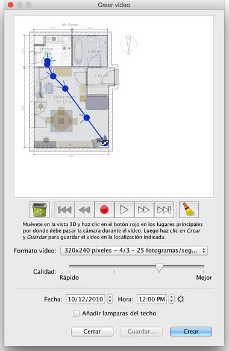

| Creando vídeos | |||
Para crear un vídeo 3D de la casa, selecciona vista 3D > Crear video... en el menú o haz clic en la herramienta Crear video.
Esto mostrará un cuadro de diálogo similar al dedicado a la creación de fotos.  El la parte superior de este panel, aparece el plano de la casa en el que
será mostrado el camino virtual de la videocámara. A continuación,
los botones de grabación, reproducción y borrado que te ayudarán a grabar
los puntos por los que pasa la cámara, reproducir los puntos grabados o
eliminar algunos puntos. Para crear un vídeo, selecciona la localización inicial de la videocámara
en la vista 3D de la ventana principal de Sweet Home 3D, y haz clic en el
botón rojo del panel de creación de vídeo. Después muévete en la vista 3D
a la siguiente localización y haz clic de nuevo en el botón rojo. Repite
estos pasos para cada ubicación por donde debe pasar la cámara durante el
vídeo.
|
|